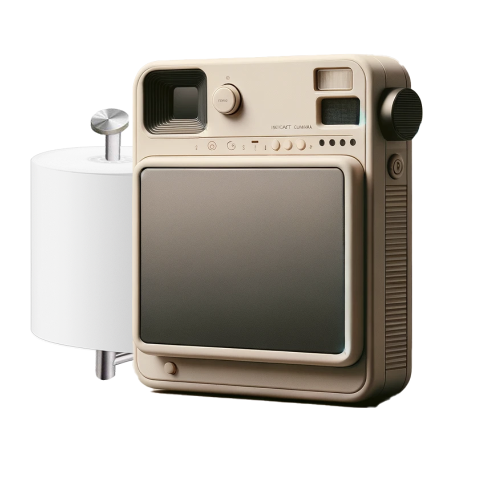
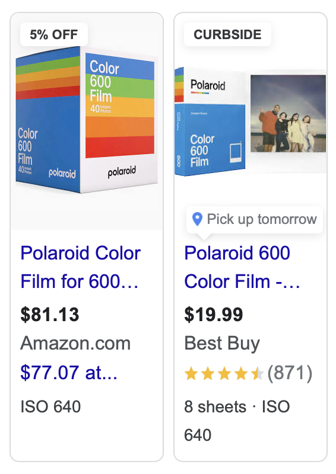
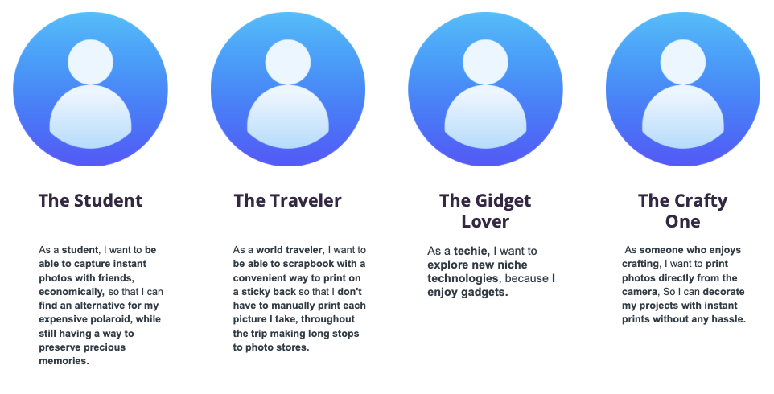
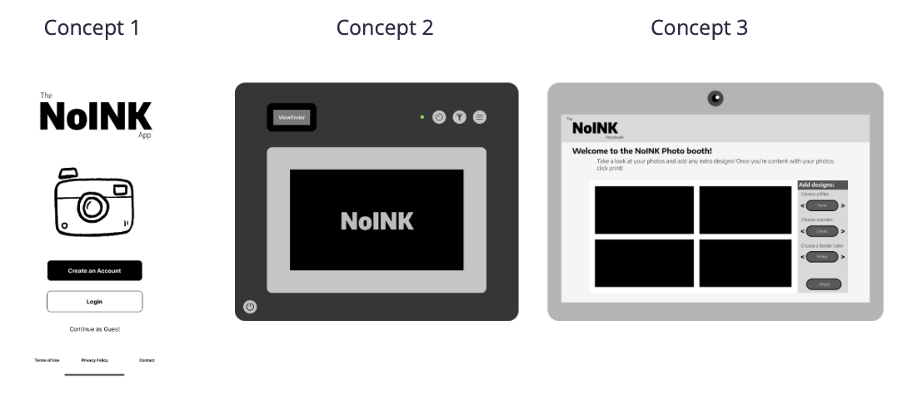

The NoInk Instant Camera represents a fusion of nostalgia and innovation, offering an affordable and creative solution for instant photography enthusiasts. With its unique receipt printer feature, this camera allows users to capture and share memories instantly, redefining the traditional instant photography experience. Its sleek design and user-friendly interface position it as a game-changer in the market.

Rough Rendering of NoINK Concept
(Dall-e 2 and Post-Modifications)
Problem Definition
Financial Barriers
Traditional instant cameras often come with a hefty price tag, limiting access to enthusiasts on a budget. Most modern instant cameras, such as Polaroids, charge between 20 and 30 dollars for one pack of film, complete with 8 exposures.
Practical Limitations
The inconvenience of purchasing film cartridges pose practical challenges for users. Polaroid film is sold in limited store types, and usually e=more expensive in the store. So if you're on a backpacking trip, or having a night with friends, Polaroid film may be hard to come by.

Screenshot from Google Shopping highlighting current film pricing
NoInk's Solution
NoInk revolutionizes instant photography through its innovative use of thermal printing technology. This technology allows for printing without the need for traditional ink cartridges. Instead, images are produced by selectively heating coated thermochromic paper, commonly known as receipt paper. When this paper passes over the thermal print head, the desired areas heat up and create an image or text.
The ability to use any standard receipt printer paper is a significant advantage, making the NoInk camera not only versatile but also cost-effective. Users can easily replace the paper at a fraction of the cost of traditional film cartridges used in other instant cameras. Furthermore, NoInk supports 300 dpi (dots per inch) printing resolution, which ensures that each photo is crisp and detailed, rivaling the quality of traditional photographs but at a much lower operational cost.
This approach not only simplifies maintenance but also significantly reduces the environmental impact by eliminating the need for ink-based cartridges, aligning with modern sustainability standards. The simplicity and accessibility of this technology make it ideal for a wide range of users, from students and hobbyists to professional photographers looking for a convenient, eco-friendly alternative.
The camera combines the nostalgic joy of having a physical photo in hand moments after taking a picture with the convenience and sustainability of modern printing technologies. The 'NoInk' aspect of the camera refers to its use of thermal printing, which eliminates the need for ink cartridges. This technology not only cuts down on ongoing expenses but also simplifies the maintenance of the device. By integrating a minimalistic design with user-friendly features, NoInk caters to both photography enthusiasts and casual users, making it an ideal choice for capturing moments in a fun and economical way.
Audience
Target Demographics
Students: Seeking an affordable means of capturing memories during their academic journey.
Hobbyists: Enthusiastic about exploring instant photography as a hobby without breaking the bank.
Travelers: Looking for a compact and convenient way to document their adventures on the go.
Tech Enthusiasts: Attracted to the innovative features and modern design of the NoInk Instant Camera.
Accessibility
NoInk's intuitive design and budget-friendly price point make it accessible to users of all ages and backgrounds, democratizing instant photography.

Our top four User Stories
Team and Role
Collaborative Effort
The development of the NoInk Instant Camera was a collaborative endeavor, with team members bringing diverse expertise to the table.
Roles
Designers: Responsible for crafting the camera's aesthetic and user interface.
Engineers: Developed the technical infrastructure, including the receipt printing functionality.
User Experience Specialists: Ensured that the camera's design prioritized user satisfaction and ease of use.
Constraints
Academic Schedule
The team faced constraints imposed by academic commitments, necessitating efficient time management and prioritization of tasks.
Limited Resources
Resource constraints compelled the team to adopt innovative approaches and make strategic decisions to optimize the development process.
Design Process
Iterative Development
The design process involved iterative cycles of prototyping, testing, and refinement based on user feedback.
User-Centric Approach
By prioritizing user experience and continuously iterating based on user feedback, the team ensured that the NoInk Instant Camera met the diverse needs of its target audience.

Three Systems to conduct Usability Testing with.
Retrospective
Lessons Learned
The project provided valuable insights into the intersection of design, technology, and user experience, serving as a learning experience for all team members.
Future Development Opportunities
Areas for future development include enhancing accessibility and expanding the product's reach through targeted marketing strategies.